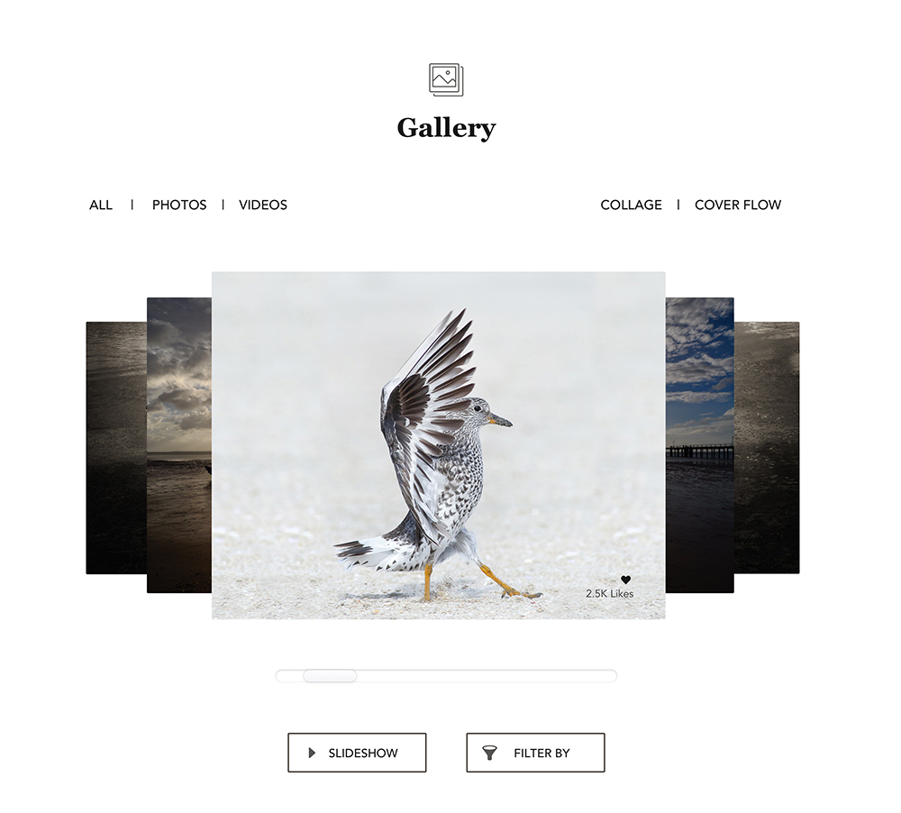
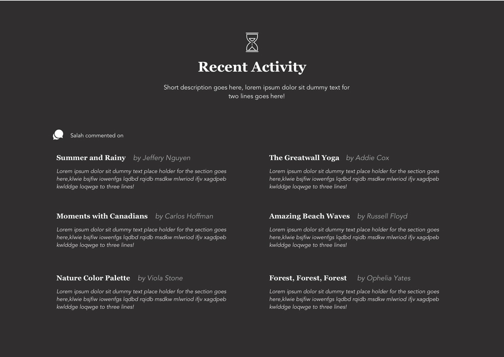
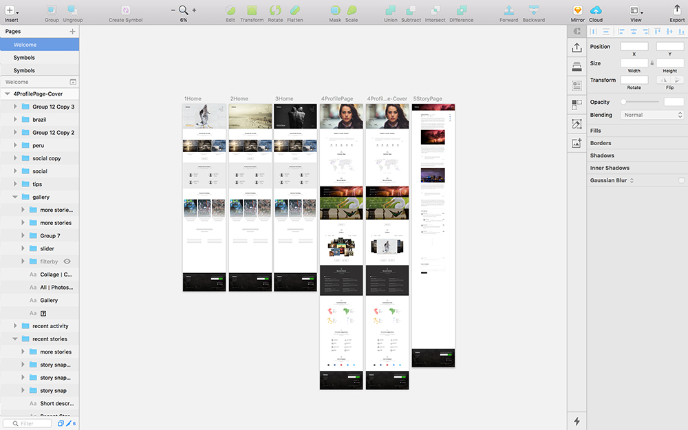

Design Challenge
Design a Profile page for Travel Enthusiasts, i.e, a web page (desktop) where a traveller or globetrotter can show off their travel experiences.
Some of the elements need to be considered for the page design includes, Profile picture, Headline, Image gallery, Recent visits, Favorite Trips, Wish list and Social links.
The Goal
The page design can be a high fidelity design but enough polish needed to access the visual design skills! Also, the design can further accommadate other elements in future like ask questions to the travellers, add as friend, etc.
Research
The profile page is about a traveller to show off their travel experience, I started with the secondary research using Internet—to know more about them like, profession, passion, activities, etc. This was necessary to understand because it helps on organising the content and developing the visual hierarchy for the page design.
After exploring the research bookmarks, I could see the travellers can be categorised to four main types— Escapist, Learners, Planners and Dreamers. Few details about each type as follows:
Escapist are those who apt to be adventurous or thrill-seeking, tend to be active and love the outdoors, open to content or destination discovery and exploration.
Learners are those who lovers of history, geography, culture, humanity and the arts. Varociously seeks out destination and activity information, often seeking atypical, once in a lifetime experiences. Receptive to interesting and unsual information
Planners are those who prefer planning and booking own trips, expect information readily available for comparison shopping, take pleasure in the process of planning travel, open to offers and relevant persuasive messaging.
Dreamers are those who seek out and consume travel content for enjoyment, are always thinking about their next trip, browse through travel content and spend time with it, are passionate travel advocates.
I utilised my research findings to construct a virtual persona for the exercise. I limited myself to utilise the time to document a persona with these findings to the visual designs.
Concept Designs
I like to explore many ideas and I prefer the whiteboard or pen/pencil and paper medium—as it is easy, convenient and quick to shape the concepts and evaluate for possible solutions for the problem. Some of my concept designs for the profile page that I did as part of my analysis as follows.
Early concepts: Profile page elements visual block structure analysis using black board/chalk!
Few concept analysis with paper/pen: Profile page elements visual block structure.
Another approach on organising the profile page elements.
Concept analysis with few more details of the profile page elements.
Task Flow
For this design exercise, The primary focus is about the profile page and its design. Hence I have assumed that whenever the users of the website (blog) click on the author name, who are the travellers sharing their experience in terms of articles/stories, photos and videos, redirects the users to the respective profile page, and this interaction will be consistent across the pages.
Wireframes
As part of the next step, I developed the wireframes using Balsamiq tool, as it is a convenient tool to develop wireframes to explore concepts along with the click through interactions. For example, from home page, click on the author name in hero image which can be a featured article, the profile page for that author can be loaded on the screen. Some of concept wireframe designs for the profile page as follows.
Invision Interactive Prototype Link (1/2)https://goo.gl/iuv5K2
*Please browse the prototype in full screen mode for better experience!Visual Designs
The travel is more about the visual memories and experiencing the physical location, environment, culture and so on. The photos and videos helps to an entend to reproduce the feel for the users when they go through the travellers blog or stories in the website. It is also about the inspiration and getting inspired to the far away beauty across different countries and people. Hence I assumed the website as a travel blog website with more of imageries and story telling platform.
Hobilobe- The travellers blog website that I named for this exercise. I derived this name from the words "Hobby" and "Globe"! :)
I would like to talk more about the visual designs and the thought process instead I used than writing everything here. Meanwhile, I would encourge you to explore the below design as images and browse the prototype for a real time live site experience for the navigation and the overall structure. I have designed the Home Page as well for the first two fold page view area to support the Profile Page on navigation and the experience!
Profile Page: The traveller profile picture, name, profession, followers, etc, elements.
The profile introduction section with few statistics about the traveller's contribution on the website.
The traveller's journey map to glance through the visited places along with the upcoming trips.
The top three recent stories/blog that the traveller shared on the website.
The Photo and Video gallery section.
The travellers recent activity in terms of comments or discussions about other fellow travellers stories/blog.
Some of the future visits or wish list of places that the traveller would like to do for the year or so.
Tips or suggestions based on the traveller's experience across different categories.
And lastly, the social links to stay connected with the traveller.
Screengrab of SketchApp—Artboards with home page and profile page designs for the exercise.
Profile page design:

Invision Interactive Prototype Link (2/2)https://goo.gl/2y77aS
*Please browse the prototype in full screen mode for better experience!Here I conclude my design exercise.I hope you have enjoyed exploring my designs—appreciate your time and patience. Thank you so much!
Mahendra Kumar